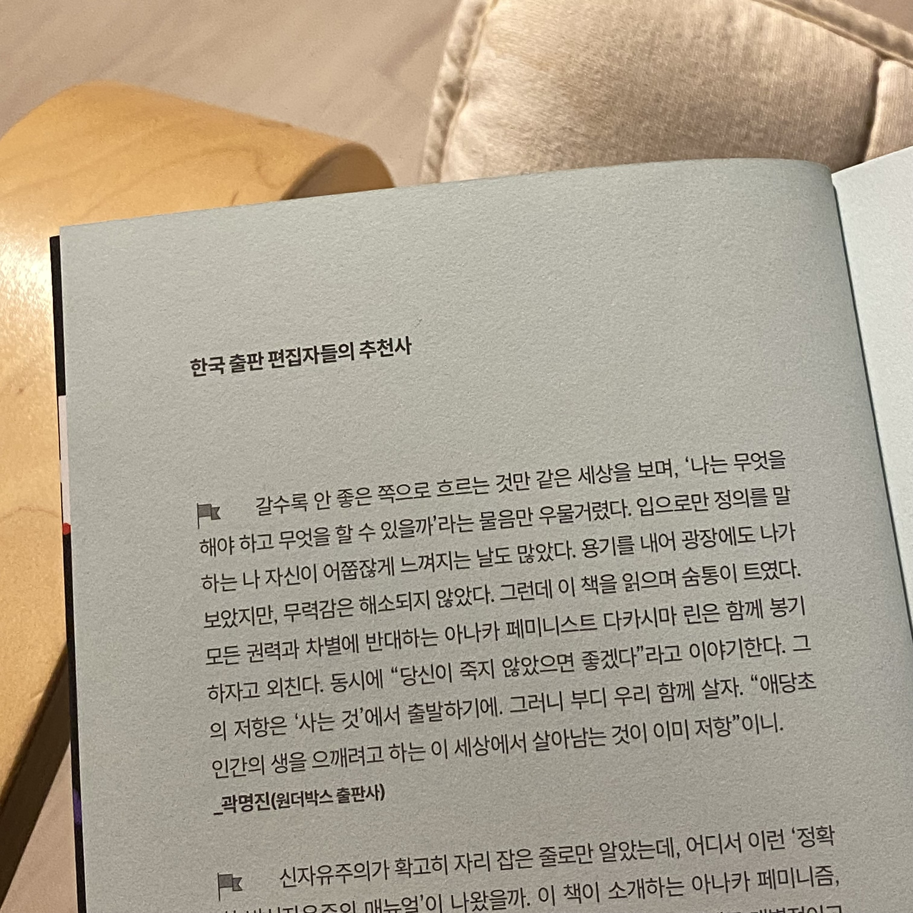

[추천사]이불 속에서 봉기하라, 다카시마 린
갈수록 안 좋은 쪽으로 흐르는 것만 같은 세상을 보며, ‘나는 무엇을 해야 하고 무엇을 할 수 있을까’라는 물음만 우물거렸다. 입으로만 정의를 말하는 나 자신이 어쭙잖게 느껴지는 날도 많았다. 용기를 내어 광장에도 나가보았지만, 무력감은 해소되지 않았다. 그런데 이 책을 읽으며 숨통이 트였다. 모든 권력과 차별에 반대하는 아나카 페미니스트 다카시마 린은 함께 봉기하자고 외친다. 동시에 “당신이 죽지 않았으면 좋겠다”라고 이야기한다. 그의 저항은 ‘사는 것’에서 출발하기에. 그러니 부디 우리 함께 살자. “애당초 인간의 생을 으깨려고 하는 이 세상에서 살아남는 것이 이미 저항”이니.
